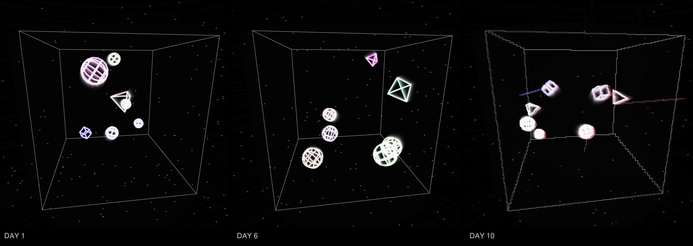
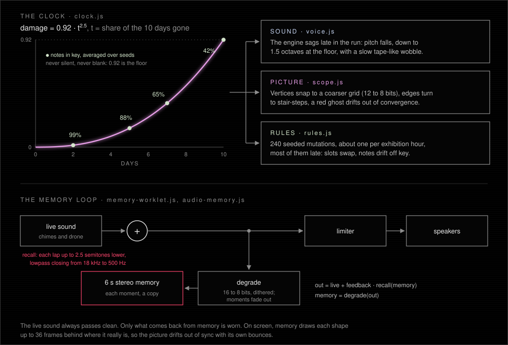
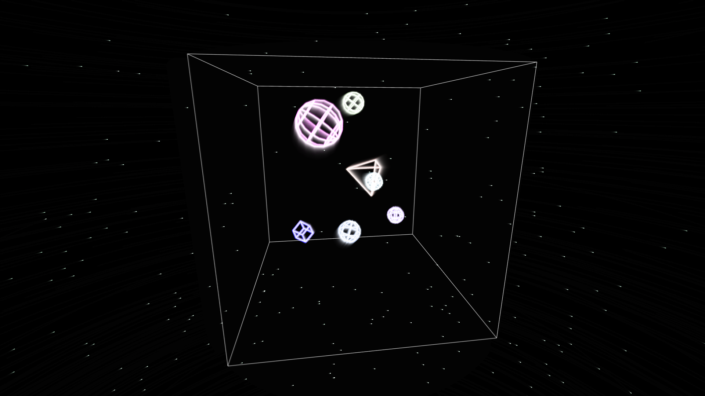
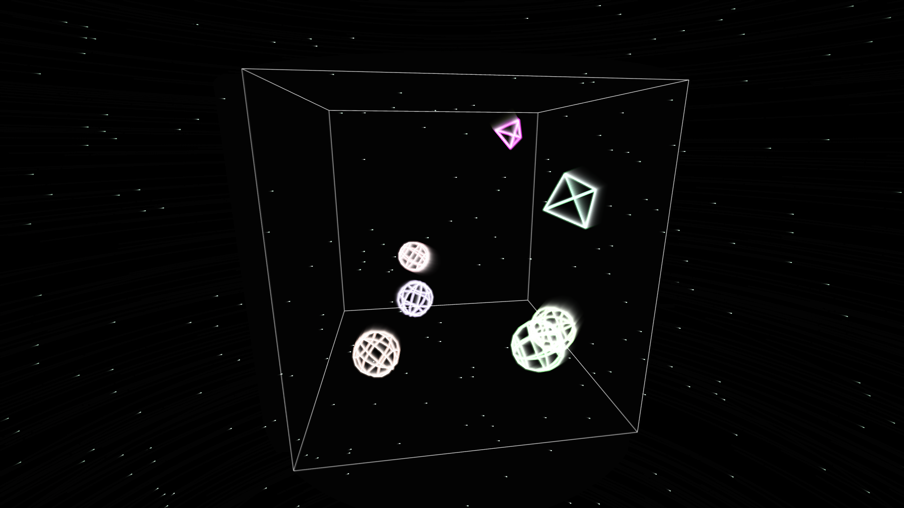
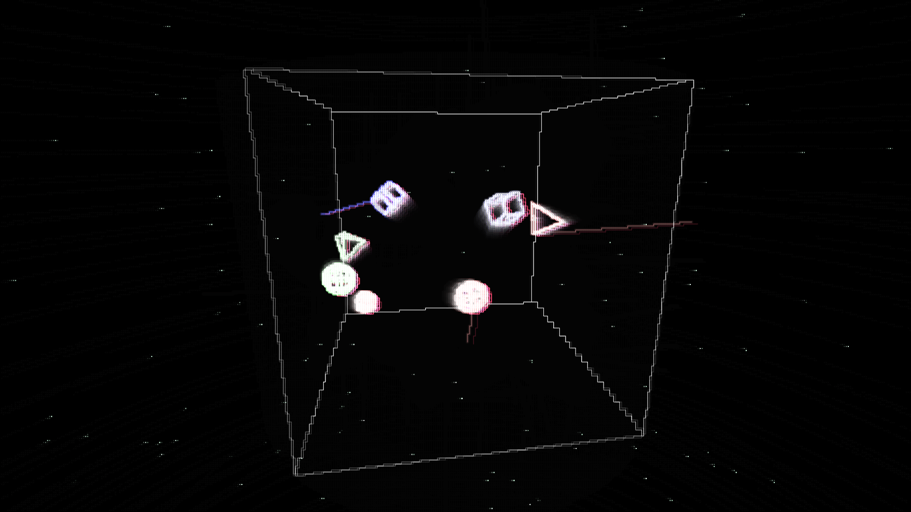

Spheres, tetrahedra and cubes bounce inside a turning wireframe cube, and every bounce plays a note. The shapes never change. Over the ten days of a show, the piece's memory of them wears out.
Persistence of Forms is a real-time generative piece of video and stereo sound for one screen or projection. It is built on FORMS, an earlier piece by Checo Cadena from checocadena.com, with a new decay layer on top. Shapes appear, bounce and fade. Each wall hit plays a chime over a soft drone: the height of the hit picks the note and the side of the box sets the pan. The picture is drawn like an old phosphor screen, with glowing lines, trails and scanlines.
Everything the piece plays is fed back through a six-second memory, so each moment is partly a copy of the one before. A clock counts the days of the show and sets how worn that memory is. The first days are nearly clean. Late in the run, echoes sink lower and duller, notes drift off key, lines break into stair-steps and red ghosts, and shapes are drawn up to 36 frames behind where they really are.
The clock belongs to the room, not to the visit. Its start time is saved on the computer, so a refresh or a restart does not heal the piece, and the same moment in the run always gives the same wear.
The ideal can be restored endlessly, but every return is a copy, and every copy loses something. A visitor who comes back on another day meets the same shapes, and a different piece.From the artist's statement
Stage. The software runs and has been tested in compressed runs: with ?timescale=10000 the ten days pass in about 86 seconds, and the 91-second video in the repository shows the full ten days. Its 11 automated tests pass. It has not been shown publicly yet. It was submitted to the SAVE / DIE / RETRY open call at A Space Gallery (deadline 11 October 2026) and was not selected.

The clock. One number, damage, rises as 0.92 · t2.5 over the run, so the first day or two stay nearly clean and the wear piles onto the last days. It stops at 0.92: the piece never goes silent or blank.
Sound. Each bounce plays a chime with a 1.6 s decay, up to 6 voices, over a detuned pad that changes chord every 60 s. The chimes are tuned to the pad's chord, so a clean system is always in key. Late in the run the whole engine sags in pitch and wobbles like tape.
Memory. A 6 s stereo loop sits before the limiter. What comes back from it is pitched lower each lap and darker, and is requantised. The live sound itself always passes clean.
Picture. The scene is drawn as a phosphor beam with glow and trails. Damage snaps vertices to a coarser grid, turns edges into stair-steps, throws an occasional spike, lengthens the afterglow and pulls a red ghost out of line.
Rules. The notes come from 10 slots in the pad's scale. Over ten days, 240 mutations wear them, about one per exhibition hour and most of them late. Each one is drawn from a fixed seed, so the same moment always gives the same rules. Notes are about 99% in key on day 2 and 42% at the end.
Built on. FORMS's own simulation is unchanged: three.js still runs the bouncing; the new layer reads its scene and replaces how it is drawn and heard. The sound engine and the scope look come from checocadena.com.



Frames of the piece itself, from the repository. Supplied at full size, not enlarged: 1 day 1 and 2 day 10 (1920 × 1080), 3 the strip from the cover (3288 × 1170).
| Format | Real-time generative video and stereo sound for one screen or projection, running continuously for the length of the show. |
|---|---|
| Dimensions | Variable. TO CONFIRM (Checo): preferred screen or projection size, room, and listening level. |
| Duration | 10 days by default. Another length is set with ?days=N; the wear is spread over whatever length is set. |
| Equipment | A computer running Chrome, a screen or projector, stereo speakers, and power for the whole run. Node.js serves the files locally. No internet connection is needed: three.js and Tone.js are included in the repository. TO CONFIRM (Checo): minimum computer spec, and what the venue provides. |
| Opening day | npm start, then open localhost:8090/?reset=1 once and click to begin. The click goes fullscreen, keeps the screen awake, keeps audio running and hides the cursor. Do not press Shift+R after that: it starts a new show clock. |
| Restarts | The start time is kept in the browser's storage, so a reload or reboot picks up where the run was. Use the same browser profile throughout. |
| Rehearsal | ?timescale=10000 plays the ten days in about 86 s on its own test clock, so it never ages the real one. ?damage=0..0.92 holds one level. Key D shows a debug readout. |
| Checks | npm test: 11 tests of the damage curve and the seeded mutations (all pass). npm run soak -- 20: a 20-minute headless memory check. TO CONFIRM (Checo): soak results and any full-length real-time run are not recorded in the repository. |
| Edition | TO CONFIRM (Checo): edition, price or availability, and how the work is delivered to a collector or venue. |
| Video | Ten exhibition days in 91 seconds: submission/persistence-of-forms-10-days.mp4 in the repository. TO CONFIRM (Checo): a public video link (YouTube or Vimeo). |
|---|---|
| Code | {{REPO_URL}} (public). The repository has no license file. |
| Builds on | FORMS by Checo Cadena, from checocadena.com (public/Forms.html and public/js/forms/). The sound engine and the scope look also come from checocadena.com. |
| Libraries | three.js r159 and Tone.js 14.8.1, included in vendor/. |
| Title | Earlier working titles: FORMS / decay, then Degenerate Forms. |
Checo Cadena is a New York-based singer-songwriter, sound artist and creative technologist from Monterrey, Mexico, who writes and produces records and builds the machines around them: plugins, robots, installations and software. Since 2023 Cadena has been Computer Control Engineer at Amorphic Robot Works, Chico MacMurtrie's robotic sculpture studio. Cadena holds a B.S. in Integrated Design and Media from NYU Tandon and an M.A. in Creative Media and Technology from Berklee NYC.
Contact: {{ARTIST}} · {{CONTACT}} · {{WEBSITE}}
Every number in this kit comes from the repository and its files, checked {{CHECKED}}.